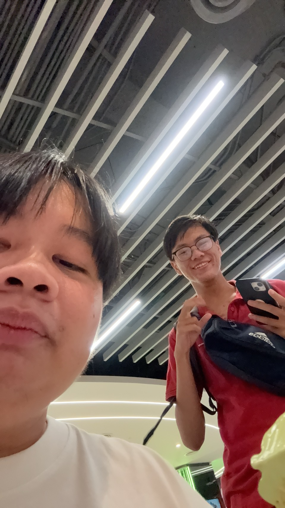

ตี๋น้อยยามวิการ
วันนี้ผมได้ไปกินตี๋น้อยกับเพื่อนคนนึงผมไม่ค่อยได้มานอนห้องเพื่อนเท่าไหร่เพราะบ้านผมอยู่ไกลวันนี้ผมมีความสุขมากที่ได้กินตี๋น้อยตอนกลางคืนเป็นครั้งแรกคนเยอะมาก
จำได้ว่าวันนั้นไปรอตั้งแต่หนึ่งทุ่มได้กินอีกทีห้าทุ่มพอกินเสร็จก็ขับรถกลับห้องเพื่อนตอนกลางคืนรถน้อยมากรู้สึกเหมือนถนนเป็นของเราเลยวันนั้นพอกลับถึงห้องผมรู้สึกท้อง
ใส้ผมไม่ค่อยปกติเลยไปหาเเป็ปซี่มากินต่อสรุปผมก็ไม่ปวดท้องจนผมไปอาบนํ้าแล้วก็ไม่รู้สึกปวดจึงมานอนเล้วเผลอหลับไปจนตื่นมาได้พบว่าผมได้ปวดท้องหนักมากแต่เป็นตอนเช้าที่เช้ามากและนอนไม่หลับเลยครับ แล้ววันนั้นผมก็ได้ไปเดินเล่นเจอสังคมตอนกลางคืนมากมายหลายตาจนผมไม่รู้สึกว่าเหมือนอยู่บ้านเพราะผมไม่ชินหูชินตากับเมืองสักเท่าไหร่
เพราะแถวบ้านผม 6 โมงก็มืดหมดแล้วรถแถวนั้นก็ไม่ค่อยมีเลยเงียบจนได้ยินเสียงแมลงในตอนกลางคืนมากมายแต่ในเมืองก็เสียงคนเสียงรถเสียงดนตรีดังอยู่ตลอดกลางคืนผมเลยตื่นเต้นดี